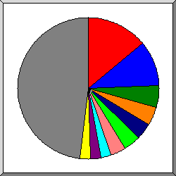
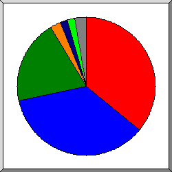
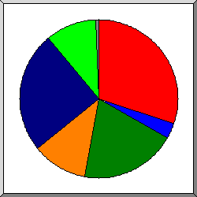

Статистика обращений к goome.ru
Статистика обращений к goome.ru
Программа стартовала в сб. 31 мар 2018 13:03.
Анализ обращений к серверу с пт. 30 мар 2018 18:37 по сб. 31 мар 2018 12:30 (0,75 дней).
Статистика обращений к goome.ruПрограмма стартовала в сб. 31 мар 2018 13:03.
Анализ обращений к серверу с пт. 30 мар 2018 18:37 по сб. 31 мар 2018 12:30 (0,75 дней).
(Переход: Вверх | Основная Информация | Статистика по месяцам | Статистика по дням недели | Статистика по времени суток | Статистика по доменам | Статистика по организациям | Статистика отказов по ссылкам | Статистика по ссылающимся сайтам | Статистика по браузерам (подробная) | Статистика по браузерам (суммарная) | Статистика по операционным системам | Статистика по коду возврата | Статистика по размерам файлов | Статистика по типам файлов | Статистика по директориям | Статистика по запросам)
Успешных обращений: 24
Среднее кол. успешных обращений в день: 30
Успешных обращений к страницам: 17
Среднее кол. успешных обращений к страницам в день: 21
Неуспешных запросов: 11
Количество запрошенных файлов: 5
Количество обслуженных хостов: 1
Данных передано: 7,92 килобайт
Среднее кол. переданных данных в день: 10,63 килобайт
(Переход: Вверх | Основная Информация | Статистика по месяцам | Статистика по дням недели | Статистика по времени суток | Статистика по доменам | Статистика по организациям | Статистика отказов по ссылкам | Статистика по ссылающимся сайтам | Статистика по браузерам (подробная) | Статистика по браузерам (суммарная) | Статистика по операционным системам | Статистика по коду возврата | Статистика по размерам файлов | Статистика по типам файлов | Статистика по директориям | Статистика по запросам)
Каждый символ ( ) отображает 1 обращение к странице.
) отображает 1 обращение к странице.
| месяц | запросы | страниц | |
|---|---|---|---|
| мар 2018 | 24 | 17 |  |
Наибольшее количество обращений в мар 2018 (17 обращений к страницам).
(Переход: Вверх | Основная Информация | Статистика по месяцам | Статистика по дням недели | Статистика по времени суток | Статистика по доменам | Статистика по организациям | Статистика отказов по ссылкам | Статистика по ссылающимся сайтам | Статистика по браузерам (подробная) | Статистика по браузерам (суммарная) | Статистика по операционным системам | Статистика по коду возврата | Статистика по размерам файлов | Статистика по типам файлов | Статистика по директориям | Статистика по запросам)
Каждый символ () отображает 1 обращение к странице.
| день | запросы | страниц | |
|---|---|---|---|
| вс. | 0 | 0 | |
| пн. | 0 | 0 | |
| вт. | 0 | 0 | |
| ср. | 0 | 0 | |
| чт. | 0 | 0 | |
| пт. | 3 | 3 |  |
| сб. | 21 | 14 |   |
(Переход: Вверх | Основная Информация | Статистика по месяцам | Статистика по дням недели | Статистика по времени суток | Статистика по доменам | Статистика по организациям | Статистика отказов по ссылкам | Статистика по ссылающимся сайтам | Статистика по браузерам (подробная) | Статистика по браузерам (суммарная) | Статистика по операционным системам | Статистика по коду возврата | Статистика по размерам файлов | Статистика по типам файлов | Статистика по директориям | Статистика по запросам)
Каждый символ () отображает 1 обращение к странице.
| час | запросы | страниц | |
|---|---|---|---|
| 0 | 2 | 2 | |
| 1 | 0 | 0 | |
| 2 | 0 | 0 | |
| 3 | 7 | 0 | |
| 4 | 9 | 9 | |
| 5 | 0 | 0 | |
| 6 | 1 | 1 | |
| 7 | 0 | 0 | |
| 8 | 0 | 0 | |
| 9 | 2 | 2 | |
| 10 | 0 | 0 | |
| 11 | 0 | 0 | |
| 12 | 0 | 0 | |
| 13 | 0 | 0 | |
| 14 | 0 | 0 | |
| 15 | 0 | 0 | |
| 16 | 0 | 0 | |
| 17 | 0 | 0 | |
| 18 | 1 | 1 | |
| 19 | 0 | 0 | |
| 20 | 0 | 0 | |
| 21 | 0 | 0 | |
| 22 | 1 | 1 | |
| 23 | 1 | 1 | |
(Переход: Вверх | Основная Информация | Статистика по месяцам | Статистика по дням недели | Статистика по времени суток | Статистика по доменам | Статистика по организациям | Статистика отказов по ссылкам | Статистика по ссылающимся сайтам | Статистика по браузерам (подробная) | Статистика по браузерам (суммарная) | Статистика по операционным системам | Статистика по коду возврата | Статистика по размерам файлов | Статистика по типам файлов | Статистика по директориям | Статистика по запросам)
Список доменов, отсортировано по суммарному трафику.
| запросы | %байт | домен |
|---|---|---|
| 24 | 100% | [нераспознанный IP-адрес] |
(Переход: Вверх | Основная Информация | Статистика по месяцам | Статистика по дням недели | Статистика по времени суток | Статистика по доменам | Статистика по организациям | Статистика отказов по ссылкам | Статистика по ссылающимся сайтам | Статистика по браузерам (подробная) | Статистика по браузерам (суммарная) | Статистика по операционным системам | Статистика по коду возврата | Статистика по размерам файлов | Статистика по типам файлов | Статистика по директориям | Статистика по запросам)
Список организаций, отсортировано по количеству обращений.
| запросы | %байт | организация |
|---|---|---|
| 24 | 100% | 54 |
(Переход: Вверх | Основная Информация | Статистика по месяцам | Статистика по дням недели | Статистика по времени суток | Статистика по доменам | Статистика по организациям | Статистика отказов по ссылкам | Статистика по ссылающимся сайтам | Статистика по браузерам (подробная) | Статистика по браузерам (суммарная) | Статистика по операционным системам | Статистика по коду возврата | Статистика по размерам файлов | Статистика по типам файлов | Статистика по директориям | Статистика по запросам)

Поделено на сектора по количеству отказов.
 http://www.goome.ru/robots.txt
http://www.goome.ru/robots.txt
 http://goome.ru/index.php
http://goome.ru/index.php
Список ссылающихся URLs, отсортировано по количеству отказов.
| запросы | URL |
|---|---|
| 1 | http://www.goome.ru/robots.txt |
| 1 | http://goome.ru/index.php |
(Переход: Вверх | Основная Информация | Статистика по месяцам | Статистика по дням недели | Статистика по времени суток | Статистика по доменам | Статистика по организациям | Статистика отказов по ссылкам | Статистика по ссылающимся сайтам | Статистика по браузерам (подробная) | Статистика по браузерам (суммарная) | Статистика по операционным системам | Статистика по коду возврата | Статистика по размерам файлов | Статистика по типам файлов | Статистика по директориям | Статистика по запросам)

Поделено на сектора по количеству обращений.
http://www.goome.ru/
http://mail.goome.ru/
 http://goome.ru/
http://goome.ru/
 http://yandex.ru/
http://yandex.ru/
Список ссылающихся сайтов, отсортировано по количеству обращений.
| запросы | сайт |
|---|---|
| 4 | http://www.goome.ru/ |
| 3 | http://mail.goome.ru/ |
| 2 | http://goome.ru/ |
| 1 | http://yandex.ru/ |
(Переход: Вверх | Основная Информация | Статистика по месяцам | Статистика по дням недели | Статистика по времени суток | Статистика по доменам | Статистика по организациям | Статистика отказов по ссылкам | Статистика по ссылающимся сайтам | Статистика по браузерам (подробная) | Статистика по браузерам (суммарная) | Статистика по операционным системам | Статистика по коду возврата | Статистика по размерам файлов | Статистика по типам файлов | Статистика по директориям | Статистика по запросам)

Поделено на сектора по количеству обращений к странице.
Mozilla/5.0 (Windows NT 10.0; Win64; x64) AppleWebKit/537.36 (KHTML, like Gecko) Chrome/64.0.3282.186 Safari/537.36
Mozilla/5.0(compatible;MSIE9.0;WindowsNT6.1;Trident/5.0)
Mozilla/5.0 (compatible; archive.org_bot +http://www.archive.org/details/archive.org_bot)
Mozilla/5.0 (X11; Linux x86_64) AppleWebKit/537.36 (KHTML, like Gecko) Chrome/34.0.1847.132 Safari/537.36
 Mozilla/5.0 (iPhone; CPU iPhone OS 10_3_3 like Mac OS X) AppleWebKit/603.3.8 (KHTML, like Gecko) Version/10.0 Mobile/14G60 Safari/602.1
Mozilla/5.0 (iPhone; CPU iPhone OS 10_3_3 like Mac OS X) AppleWebKit/603.3.8 (KHTML, like Gecko) Version/10.0 Mobile/14G60 Safari/602.1
 Mozilla/5.0 (iPhone; CPU iPhone OS 11_2_5 like Mac OS X) AppleWebKit/604.5.6 (KHTML, like Gecko) Version/11.0 Mobile/15D60 Safari/604.1
Mozilla/5.0 (iPhone; CPU iPhone OS 11_2_5 like Mac OS X) AppleWebKit/604.5.6 (KHTML, like Gecko) Version/11.0 Mobile/15D60 Safari/604.1
 Mozilla/5.0 (Linux; Android 6.0.1; Nexus 5X Build/MMB29P) AppleWebKit/537.36 (KHTML, like Gecko; Google Page Speed Insights) Chrome/41.0.2272.118 Mobile Safari/537.36
Mozilla/5.0 (Linux; Android 6.0.1; Nexus 5X Build/MMB29P) AppleWebKit/537.36 (KHTML, like Gecko; Google Page Speed Insights) Chrome/41.0.2272.118 Mobile Safari/537.36
 Go 1.1 package http
Go 1.1 package http
 Mozilla/5.0 (Macintosh; Intel Mac OS X 10_12_6) AppleWebKit/537.36 (KHTML, like Gecko) Chrome/61.0.3163.100 Safari/537.36
Mozilla/5.0 (Macintosh; Intel Mac OS X 10_12_6) AppleWebKit/537.36 (KHTML, like Gecko) Chrome/61.0.3163.100 Safari/537.36
 Virusdie crawler/3.0
Virusdie crawler/3.0
 другое
другое
Список браузеров на которые приходиться, как минимум 1 обращение к странице, отсортировано по количеству обращений к странице.
| запросы | страниц | браузер |
|---|---|---|
| 2 | 2 | Mozilla/5.0 (Windows NT 10.0; Win64; x64) AppleWebKit/537.36 (KHTML, like Gecko) Chrome/64.0.3282.186 Safari/537.36 |
| 2 | 2 | Mozilla/5.0(compatible;MSIE9.0;WindowsNT6.1;Trident/5.0) |
| 1 | 1 | Mozilla/5.0 (compatible; archive.org_bot +http://www.archive.org/details/archive.org_bot) |
| 1 | 1 | Mozilla/5.0 (X11; Linux x86_64) AppleWebKit/537.36 (KHTML, like Gecko) Chrome/34.0.1847.132 Safari/537.36 |
| 1 | 1 | Mozilla/5.0 (iPhone; CPU iPhone OS 10_3_3 like Mac OS X) AppleWebKit/603.3.8 (KHTML, like Gecko) Version/10.0 Mobile/14G60 Safari/602.1 |
| 1 | 1 | Mozilla/5.0 (iPhone; CPU iPhone OS 11_2_5 like Mac OS X) AppleWebKit/604.5.6 (KHTML, like Gecko) Version/11.0 Mobile/15D60 Safari/604.1 |
| 1 | 1 | Mozilla/5.0 (Linux; Android 6.0.1; Nexus 5X Build/MMB29P) AppleWebKit/537.36 (KHTML, like Gecko; Google Page Speed Insights) Chrome/41.0.2272.118 Mobile Safari/537.36 |
| 1 | 1 | Go 1.1 package http |
| 1 | 1 | Mozilla/5.0 (Macintosh; Intel Mac OS X 10_12_6) AppleWebKit/537.36 (KHTML, like Gecko) Chrome/61.0.3163.100 Safari/537.36 |
| 1 | 1 | Virusdie crawler/3.0 |
| 1 | 1 | Mozilla/5.0 (iPhone; CPU iPhone OS 11_2_6 like Mac OS X) AppleWebKit/604.5.6 (KHTML, like Gecko) Version/11.0 Mobile/15D100 Safari/604.1 |
| 1 | 1 | Mozilla/5.0 (Windows NT 10.0; Win64; x64) AppleWebKit/537.36 (KHTML, like Gecko) Chrome/52.0.2743.116 Safari/537.36 Edge/15.15063 |
| 1 | 1 | Mozilla/5.0 (compatible; YandexBot/3.0; +http://yandex.com/bots) |
| 1 | 1 | Mozilla/5.0 (compatible; MSIE 10.0; Windows NT 6.1; WOW64; Trident/6.0; Touch; ASU2JS) |
| 1 | 1 | Mozilla/5.0 (Windows NT 6.1; Win64; rv:38.0) Gecko/20100101 Firefox/38.0 |
| 7 | 0 | [не распознано: 1 браузер] |
(Переход: Вверх | Основная Информация | Статистика по месяцам | Статистика по дням недели | Статистика по времени суток | Статистика по доменам | Статистика по организациям | Статистика отказов по ссылкам | Статистика по ссылающимся сайтам | Статистика по браузерам (подробная) | Статистика по браузерам (суммарная) | Статистика по операционным системам | Статистика по коду возврата | Статистика по размерам файлов | Статистика по типам файлов | Статистика по директориям | Статистика по запросам)

Поделено на сектора по количеству обращений к странице.
Safari
MSIE
Netscape (compatible)
Virusdie crawler
Firefox
Go
Список браузеров на которые приходиться, как минимум 1 обращение к странице, отсортировано по количеству обращений к странице.
| N | запросы | страниц | браузер |
|---|---|---|---|
| 1 | 9 | 9 | Safari |
| 6 | 6 | Safari/537 | |
| 2 | 2 | Safari/604 | |
| 1 | 1 | Safari/602 | |
| 2 | 3 | 3 | MSIE |
| 1 | 1 | MSIE/10 | |
| 3 | 2 | 2 | Netscape (compatible) |
| 4 | 1 | 1 | Virusdie crawler |
| 1 | 1 | Virusdie crawler/3 | |
| 5 | 1 | 1 | Firefox |
| 1 | 1 | Firefox/38 | |
| 6 | 1 | 1 | Go |
| 1 | 1 | Go/1 | |
| 7 | 0 | [не распознано: 1 браузер] |
(Переход: Вверх | Основная Информация | Статистика по месяцам | Статистика по дням недели | Статистика по времени суток | Статистика по доменам | Статистика по организациям | Статистика отказов по ссылкам | Статистика по ссылающимся сайтам | Статистика по браузерам (подробная) | Статистика по браузерам (суммарная) | Статистика по операционным системам | Статистика по коду возврата | Статистика по размерам файлов | Статистика по типам файлов | Статистика по директориям | Статистика по запросам)

Поделено на сектора по количеству обращений к странице.
Windows
Macintosh
Неизвестная ОС
Unix
роботы
Список операционных систем, отсортировано по количеству обращений к странице.
| N | запросы | страниц | ОС |
|---|---|---|---|
| 1 | 7 | 7 | Windows |
| 4 | 4 | Неизвестная Windows-система | |
| 3 | 3 | Windows NT | |
| 2 | 4 | 4 | Macintosh |
| 3 | 10 | 3 | Неизвестная ОС |
| 4 | 2 | 2 | Unix |
| 2 | 2 | Linux | |
| 5 | 1 | 1 | роботы |
(Переход: Вверх | Основная Информация | Статистика по месяцам | Статистика по дням недели | Статистика по времени суток | Статистика по доменам | Статистика по организациям | Статистика отказов по ссылкам | Статистика по ссылающимся сайтам | Статистика по браузерам (подробная) | Статистика по браузерам (суммарная) | Статистика по операционным системам | Статистика по коду возврата | Статистика по размерам файлов | Статистика по типам файлов | Статистика по директориям | Статистика по запросам)

Поделено на сектора по количеству обращений.
200 OK
404 Document not found
Список кодов возврата, отсортированный по порядковым номерам.
| запросы | код статус |
|---|---|
| 24 | 200 OK |
| 11 | 404 Document not found |
(Переход: Вверх | Основная Информация | Статистика по месяцам | Статистика по дням недели | Статистика по времени суток | Статистика по доменам | Статистика по организациям | Статистика отказов по ссылкам | Статистика по ссылающимся сайтам | Статистика по браузерам (подробная) | Статистика по браузерам (суммарная) | Статистика по операционным системам | Статистика по коду возврата | Статистика по размерам файлов | Статистика по типам файлов | Статистика по директориям | Статистика по запросам)

Поделено на сектора по количеству обращений.
11B- 100B
101B- 1kB
| размер | запросы | %байт |
|---|---|---|
| 0 | 0 | |
| 1B- 10B | 0 | |
| 11B- 100B | 7 | 6,32% |
| 101B- 1kB | 17 | 93,68% |
(Переход: Вверх | Основная Информация | Статистика по месяцам | Статистика по дням недели | Статистика по времени суток | Статистика по доменам | Статистика по организациям | Статистика отказов по ссылкам | Статистика по ссылающимся сайтам | Статистика по браузерам (подробная) | Статистика по браузерам (суммарная) | Статистика по операционным системам | Статистика по коду возврата | Статистика по размерам файлов | Статистика по типам файлов | Статистика по директориям | Статистика по запросам)

Поделено на сектора по суммарному трафику.
[директории]
.txt [Plain text]
Список расширений на которые приходиться, как минимум 0,1% трафика, отсортировано по суммарному трафику.
| запросы | %байт | расширение |
|---|---|---|
| 17 | 93,68% | [директории] |
| 7 | 6,32% | .txt [Plain text] |
(Переход: Вверх | Основная Информация | Статистика по месяцам | Статистика по дням недели | Статистика по времени суток | Статистика по доменам | Статистика по организациям | Статистика отказов по ссылкам | Статистика по ссылающимся сайтам | Статистика по браузерам (подробная) | Статистика по браузерам (суммарная) | Статистика по операционным системам | Статистика по коду возврата | Статистика по размерам файлов | Статистика по типам файлов | Статистика по директориям | Статистика по запросам)

Поделено на сектора по суммарному трафику.
[корневой каталог]
/.well-known/
Список директорий на которые приходиться, как минимум 0,01% трафика, отсортировано по суммарному трафику.
| запросы | %байт | директория |
|---|---|---|
| 17 | 93,68% | [корневой каталог] |
| 7 | 6,32% | /.well-known/ |
(Переход: Вверх | Основная Информация | Статистика по месяцам | Статистика по дням недели | Статистика по времени суток | Статистика по доменам | Статистика по организациям | Статистика отказов по ссылкам | Статистика по ссылающимся сайтам | Статистика по браузерам (подробная) | Статистика по браузерам (суммарная) | Статистика по операционным системам | Статистика по коду возврата | Статистика по размерам файлов | Статистика по типам файлов | Статистика по директориям | Статистика по запросам)
Список файлов на которые приходиться, как минимум 20 запросов, отсортировано по количеству обращений.
| запросы | %байт | последнее время | файл |
|---|---|---|---|
| 24 | 100% | 31 мар 18 09:43 | [не распознано: 5 файлов] |